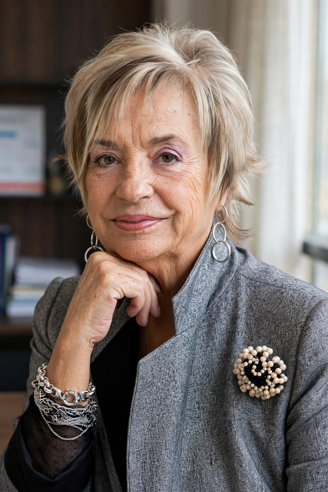

From Wikipedia, the free encyclopedia
| Rosalía Mera | |
|---|---|
 | |
| Born | 28 January 1944, A Coruña, Spain |
| Died | 15 August 2013 (aged 69), A Coruña |
| Occupation | Businesswoman, co-founder of Inditex |
| Spouse | Amancio Ortega (m. 1966; div. 1986) |
Rosalía Mera Goyenechea (28 January 1944 – 15 August 2013) was a Spanish businesswoman and entrepreneur who, with her then-husband Amancio Ortega, co-founded Inditex, the retail group that owns Zara. At her death she was the richest woman in Spain and one of the world's wealthiest self-made women, with a fortune estimated by Forbes at about $6.1 billion.
Born in A Coruña, Mera left school at 11 to work as a seamstress. In the 1960s she and Ortega began making dressing gowns and lingerie at home, building the business that opened the first Zara store in 1975 and became Inditex in 1985. After their divorce in 1986 she retained a significant stake (about 7%) in the company and invested through her holding company Rosp Corunna.
Mera founded the Paideia Foundation, supporting people with disabilities and social inclusion, and was outspoken on public issues, criticising austerity-era cuts to health and education. She died in A Coruña on 15 August 2013 after suffering a stroke while on holiday in Menorca.